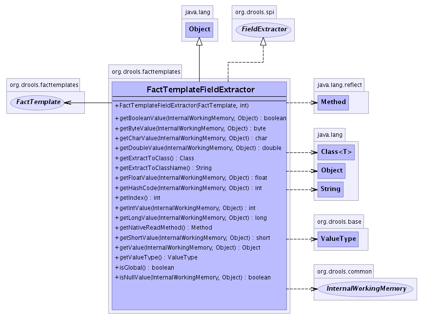

org.drools.facttemplates
Class FactTemplateFieldExtractor
java.lang.Object
 org.drools.facttemplates.FactTemplateFieldExtractor
org.drools.facttemplates.FactTemplateFieldExtractor
- All Implemented Interfaces:
- java.io.Serializable, Extractor, FieldExtractor
public class FactTemplateFieldExtractor
- extends java.lang.Object
- implements FieldExtractor
- See Also:
- Serialized Form
-
- 
|
Method Summary |
boolean |
getBooleanValue(InternalWorkingMemory workingMemory,
java.lang.Object object)
|
byte |
getByteValue(InternalWorkingMemory workingMemory,
java.lang.Object object)
|
char |
getCharValue(InternalWorkingMemory workingMemory,
java.lang.Object object)
|
double |
getDoubleValue(InternalWorkingMemory workingMemory,
java.lang.Object object)
|
java.lang.Class |
getExtractToClass()
|
java.lang.String |
getExtractToClassName()
|
float |
getFloatValue(InternalWorkingMemory workingMemory,
java.lang.Object object)
|
int |
getHashCode(InternalWorkingMemory workingMemory,
java.lang.Object object)
|
int |
getIndex()
|
int |
getIntValue(InternalWorkingMemory workingMemory,
java.lang.Object object)
|
long |
getLongValue(InternalWorkingMemory workingMemory,
java.lang.Object object)
|
java.lang.reflect.Method |
getNativeReadMethod()
|
short |
getShortValue(InternalWorkingMemory workingMemory,
java.lang.Object object)
|
java.lang.Object |
getValue(InternalWorkingMemory workingMemory,
java.lang.Object object)
|
ValueType |
getValueType()
|
boolean |
isGlobal()
|
boolean |
isNullValue(InternalWorkingMemory workingMemory,
java.lang.Object object)
|
| Methods inherited from class java.lang.Object |
clone, equals, finalize, getClass, hashCode, notify, notifyAll, toString, wait, wait, wait |
FactTemplateFieldExtractor
public FactTemplateFieldExtractor(FactTemplate factTemplate,
int fieldIndex)
getValueType
public ValueType getValueType()
- Specified by:
getValueType in interface Extractor
getValue
public java.lang.Object getValue(InternalWorkingMemory workingMemory,
java.lang.Object object)
- Specified by:
getValue in interface Extractor
getIndex
public int getIndex()
- Specified by:
getIndex in interface FieldExtractor
getExtractToClass
public java.lang.Class getExtractToClass()
- Specified by:
getExtractToClass in interface Extractor
getExtractToClassName
public java.lang.String getExtractToClassName()
- Specified by:
getExtractToClassName in interface Extractor
getBooleanValue
public boolean getBooleanValue(InternalWorkingMemory workingMemory,
java.lang.Object object)
- Specified by:
getBooleanValue in interface Extractor
getByteValue
public byte getByteValue(InternalWorkingMemory workingMemory,
java.lang.Object object)
- Specified by:
getByteValue in interface Extractor
getCharValue
public char getCharValue(InternalWorkingMemory workingMemory,
java.lang.Object object)
- Specified by:
getCharValue in interface Extractor
getDoubleValue
public double getDoubleValue(InternalWorkingMemory workingMemory,
java.lang.Object object)
- Specified by:
getDoubleValue in interface Extractor
getFloatValue
public float getFloatValue(InternalWorkingMemory workingMemory,
java.lang.Object object)
- Specified by:
getFloatValue in interface Extractor
getIntValue
public int getIntValue(InternalWorkingMemory workingMemory,
java.lang.Object object)
- Specified by:
getIntValue in interface Extractor
getLongValue
public long getLongValue(InternalWorkingMemory workingMemory,
java.lang.Object object)
- Specified by:
getLongValue in interface Extractor
getShortValue
public short getShortValue(InternalWorkingMemory workingMemory,
java.lang.Object object)
- Specified by:
getShortValue in interface Extractor
getNativeReadMethod
public java.lang.reflect.Method getNativeReadMethod()
- Specified by:
getNativeReadMethod in interface Extractor
getHashCode
public int getHashCode(InternalWorkingMemory workingMemory,
java.lang.Object object)
- Specified by:
getHashCode in interface Extractor
isGlobal
public boolean isGlobal()
- Specified by:
isGlobal in interface Extractor
isNullValue
public boolean isNullValue(InternalWorkingMemory workingMemory,
java.lang.Object object)
- Specified by:
isNullValue in interface Extractor